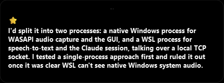
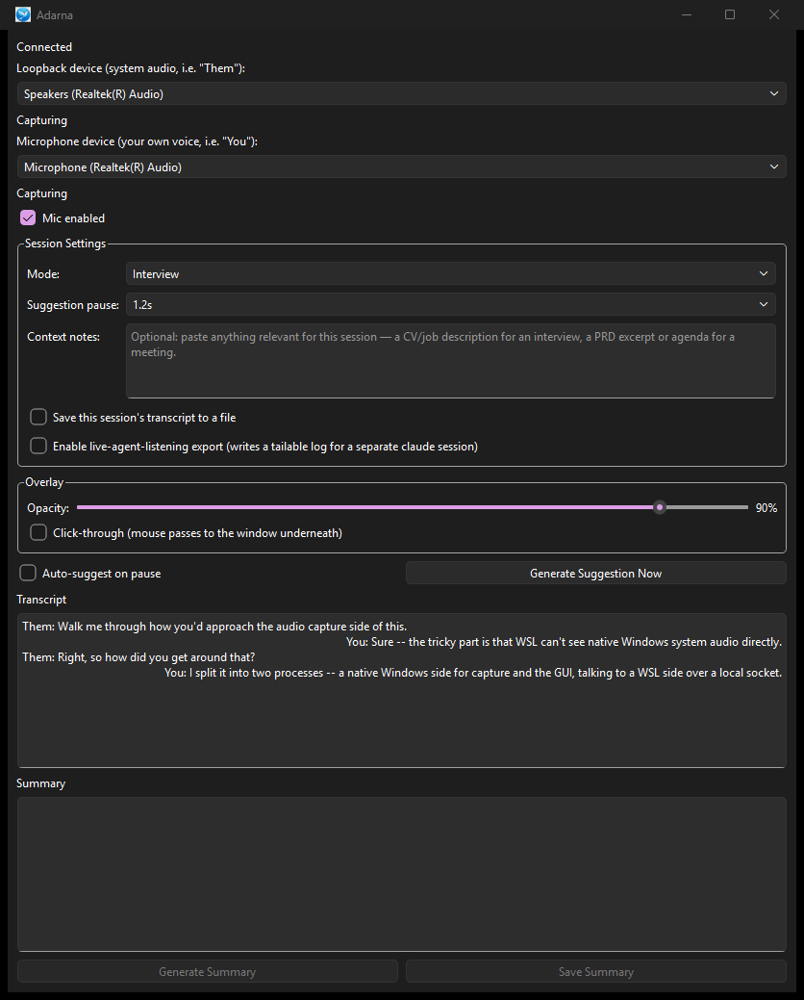
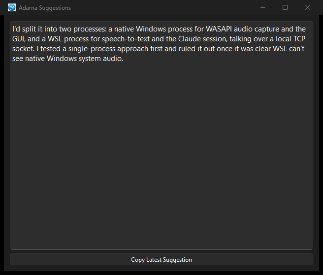

Adarna listens to a meeting as it happens, transcribes it on your own machine, and — on a pause or a hotkey — drafts the next thing you could say. It arrives in an always-on-top overlay you can glance at without leaving the call.
Built solo, end to end: Windows audio capture, local speech-to-text, a two-process cross-OS architecture, and a Claude session that never leaves the machine unless it has to.

Measured on the developer's own hardware across repeated live-call testing, not in a benchmark harness.


It hears both sides of the call — your voice and theirs — the moment the call starts.
WASAPI loopback for system audio, a parallel microphone stream, WebRTC VAD segmenting speech from silence.
Speech becomes text on your own machine, tagged with who said it.
faster-whisper in a WSL worker; the two source streams are ordered independently, then merged in true spoken order.
On a natural pause — or when you press the hotkey — Claude drafts what you could say next.
A long-lived Claude CLI session holds the conversation; mode-aware prompting shapes the answer.
The suggestion streams into a small overlay above the call. You read it and keep talking.
Always-on-top PySide6 window: draggable, resizable, adjustable opacity, optional click-through.
Transcription runs locally and nothing is written to disk unless you explicitly turn on session recording — the default is a system that forgets.
Microphone and system audio are transcribed separately, then merged in spoken order and labeled "You" and "Them", so suggestions answer the right person.
Work Meeting mode replies in a sentence or two. Interview mode returns a short narrative plus bullets, branching again by the kind of question asked.
Always-on-top, draggable, resizable, opacity-adjustable, optionally click-through. Suggestions stream token by token so you can start reading immediately.
Filtering on the speech-to-text output catches both failure modes: confident silence transcribed as words, and thin signal that sends the model free-associating.
Several rounds of "correct in code, broken in the room": audio-thread and transcription-worker races, device quirks, timing drift — each root-caused on live calls and fixed.
WSL cannot see native Windows system audio, so capture has to live on Windows — but the speech-to-text stack and the Claude CLI session want a Linux home. Feasibility testing ruled out the simpler single-process design, so Adarna is deliberately split: a native Windows GUI and audio process talking to a WSL worker over a local TCP socket.
The socket carries audio segments one way and streamed suggestion tokens the other. The Claude session is long-lived, so conversation context accumulates instead of being re-sent.
Each source is transcribed and ordered independently, then interleaved by segment start time and relabeled "You" / "Them" before the prompt is built.
The repository carries the architecture notes, the feasibility write-up that killed the single-process design, and the failure log from live testing. Happy to walk through any of it.